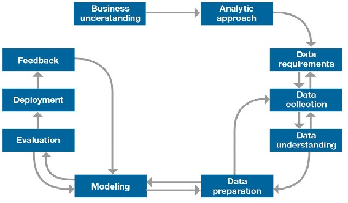

Planning
Planning
Tijdens het project zal er gewerkt worden in sprint van twee weken. Om het project te structureren zal de IBM Data Science methodology toegepast worden, zie afbeelding 1: IBM Data Science Methodology. Per sprint zal vermeld worden welke onderzoeken [^3] en producten [^4] opgeleverd zullen worden.

| # | Fase | Onderzoeken | Producten | Start | Eind |
|---|---|---|---|---|---|
| 0. | Opstart | Projectplan | 08-02 | 12-02 | |
| 1. | 1 | Exploratory data analyse Stakeholdersanalyse |
EDA Backlog |
15-02 | 26-02 |
| 2. | 2 | Data requirements analyse | Data requirements report Dataset |
01-03 | 12-03 |
| 3. | 3 - 4 | Modellering experimenten | Model prototype | 15-03 | 26-03 |
| 4. | 5 | ML Pipeline ontwerp | Ontwerpdocument | 29-03 | 09-04 |
| 5. | 5 | Model integratie | Prototype | 12-04 | 23-04 |
| 6. | 1 - 2 | Model evaluatie EDA |
Dataset versie 2 | 26-04 | 07-05 |
| 7. | 3 - 4 | Model experimenten | ML modellen versie 2 | 10-05 | 21-05 |
| 8. | 24-05 | 04-06 | |||
| 9. | 07-06 | 18-06 |